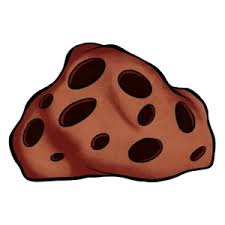
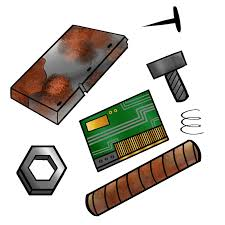

| I. Introduction - The Gravity Cane, now known as the Gravity Blade, is a rare sword in Blox Fruits. It can be obtained by defeating the boss Fajita [lv 925] who is located in the Green Zone of the Second Sea. - The drop chance for this sword is approximately 5%, so it may take a while to obtain this sword II. Moves - Like many other swords, Gravity Blade has 2 moves: +) [Z] Dimensional Grasp (Mastery 125): The user manipulate enemies into a location set by the cursor, gathering a lavender aura before releasing it in an explosion. +) [X] Lunar Blitz (Mastery 250): The user reverses gravity, flinging the target into the air, slashing them repeatedly, and finally slamming them back into the ground. III. Requirements for upgrade - To upgrade this sword, you need at least: +) 3x Meteorite  (this can be obtained by defeating the boss Fajita [lv 925]) +) 10x Scrap Metal  (everywhere in the game) IV. Pros and cons
|
|